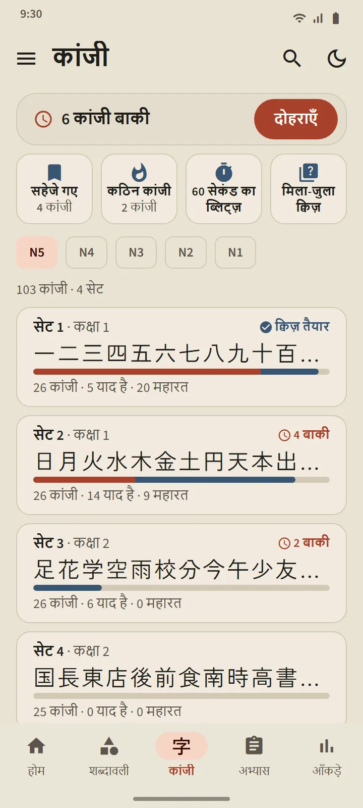
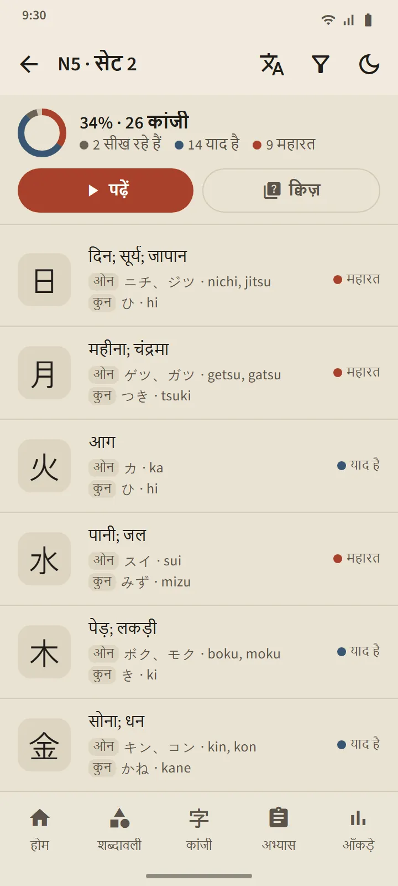
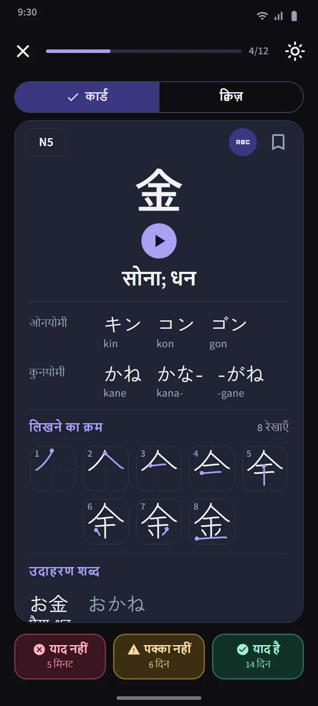
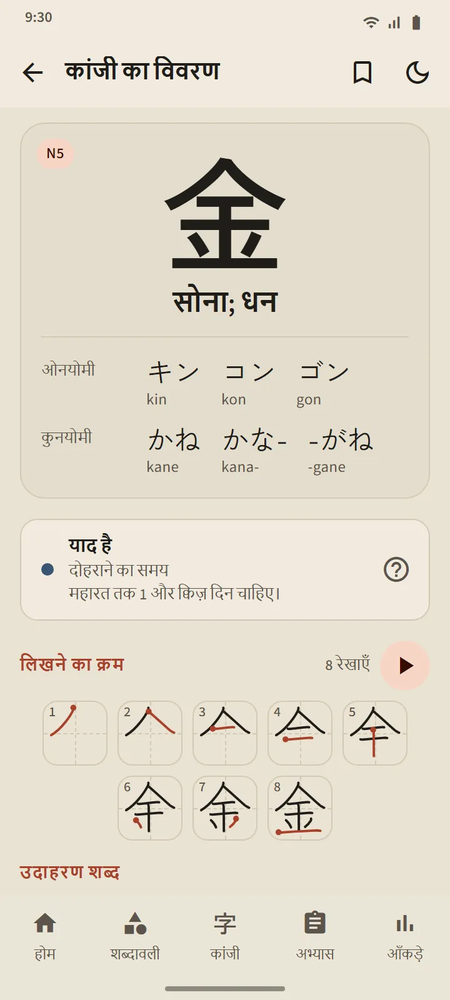
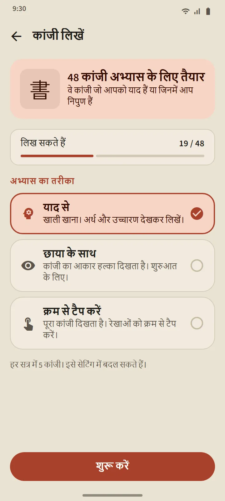
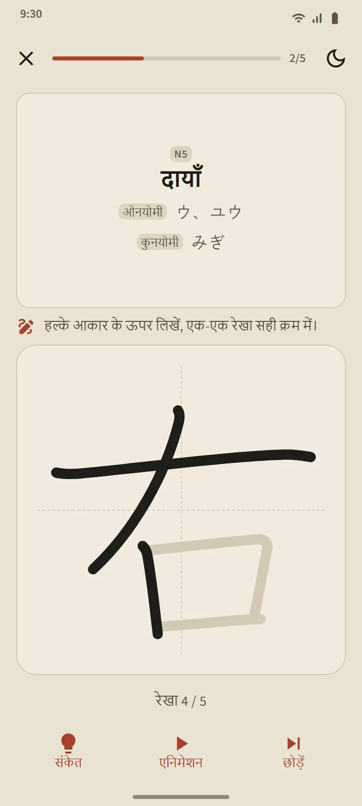

जापानी स्कूली क्रम में 25-25 कांजी के सेट
कांजी टैब JLPT स्तर के अनुसार बँटा है, फिर करीब 25 कांजी के सेटों में। एक स्तर के भीतर क्रम जापानी स्कूल पाठ्यक्रम का अनुसरण करता है (पहले कक्षा 1), फिर स्ट्रोक की गिनती कम से ज़्यादा; जो कांजी साथ-साथ आते हैं, जैसे अंक, सप्ताह के दिनों के नाम और मौसम, क्रम में ही रखे जाते हैं। हर सेट की पंक्ति में उसके कांजी, प्रगति बार, याद और महारत की गिनती, और "क्विज़ तैयार" का लेबल या दोहराने लायक कांजी की संख्या दिखती है।
| स्तर | कांजी | पहुँच |
|---|---|---|
| N5 | 103 | मुफ़्त |
| N4 | 181 | मुफ़्त |
| N3 | 370 | Premium |
| N2 | 369 | Premium |
| N1 | 1,207 | Premium |


कांजी कार्ड और क्विज़
कार्ड के आगे केवल कांजी होता है। पीछे: अर्थ, On और Kun पठन (चाहें तो रोमाजी के साथ), हर स्ट्रोक के एक फ़्रेम और शुरुआती बिंदु के निशान वाला स्ट्रोक क्रम का चित्र, और उसे इस्तेमाल करने वाले उदाहरण शब्द। शब्दावली कार्ड वाले वही तीन बटन उसे दोबारा शेड्यूल करते हैं।
किसी सेट का क्विज़ 10 याद है या महारत वाले कांजी पर खुलता है, तीन तरह के प्रश्नों के साथ: कांजी से अर्थ, अर्थ से कांजी, और कांजी से पठन। महारत का नियम वही है: तीन अलग-अलग दिन क्विज़ में सही जवाब। टैब के ऊपर कांजी दोहराव सभी सेट के दोहराने लायक हर कांजी को एक जगह लाता है, और मिला-जुला क्विज़ सेटों के आर-पार परखता है।

कांजी का विवरण और विशेष सेट
हर कांजी के विवरण पेज में उसके अर्थ, चरण और अगला दोहराव, पठन, स्ट्रोक का चित्र और उदाहरण शब्द हैं; किसी शब्द का विवरण पेज उसमें शामिल कांजी से जुड़ता है। शब्दावली की तरह कांजी के भी सहेजे गए, कठिन कांजी और 60 सेकंड का ब्लिट्ज़ सेट हैं, और होम स्क्रीन के तेज़ अभ्यास वाले हिस्से का एक स्विच उसके चारों खानों को कांजी वाले रूप में बदल देता है।


उँगली से कांजी लिखें
जिन कांजी पर आपको याद है या महारत है, उन्हें लिखकर अभ्यास किया जा सकता है: केवल अर्थ और पठन दिखाए जाते हैं, आप स्ट्रोक-दर-स्ट्रोक लिखते हैं, और हर स्ट्रोक का आकार, दिशा और क्रम बिना इंटरनेट के जाँचा जाता है। तीन तरीक़े हैं: याद से, छाया के साथ, और क्रम से टैप करें। कोई कांजी तब "लिख सकते हैं" में गिना जाता है जब आप उसे दो अलग-अलग दिन बिना मदद के याद से लिख दें।


कांजी परिचय
कांजी याद करना शुरू करने से पहले कांजी कैसे काम करते हैं, इस पर 11 छोटे पाठ: ओन्योमी और कुन्योमी और कब कौन-सा इस्तेमाल होता है, ओकुरिगाना, っ और रेंदाकु जैसी बदलने वाली ध्वनियाँ, पूरे शब्द के रूप में याद किए जाने वाले उच्चारण, रेडिकल, और स्ट्रोक का क्रम। ये होम के "जापानी भाषा की बुनियाद" खंड से खुलते हैं, और मुफ़्त हैं।
डेटा के स्रोत
अर्थ और पठन KANJIDIC (Electronic Dictionary Research and Development Group) से आते हैं और स्ट्रोक क्रम KanjiVG से, दोनों CC BY-SA लाइसेंस के तहत। कांजी के स्तर पुरानी JLPT सूचियों पर आधारित अनुमान हैं; मौजूदा JLPT कांजी की कोई आधिकारिक सूची प्रकाशित नहीं करता।